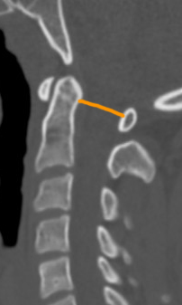

Adapted from: Knipe H, Atlantodental interval. Radiopaedia.org (Accessed on 17 Dec 2025). https://doi.org/10.53347/rID-38418
1) Description of Measurement
PADI represents the functional spinal canal diameter at the C1–C2 level. It directly estimates the space available for the spinal cord and is a strong predictor of neurologic risk.
2) Instructions to Measure
3) Normal vs. Pathologic Ranges
4) Important References
Bono CM, Vaccaro AR, Fehlings M, et al. Measurement techniques for upper cervical spine injuries: consensus statement of the spine trauma study group. Spine. 2007;32:593-600.
Joaquim, A. F., Ghizoni, E., Tedeschi, H., Appenzeller, S., & Riew, K. D. (2015). Radiological evaluation of cervical spine involvement in rheumatoid arthritis. Neurosurgical focus, 38(4), E4. https://doi.org/10.3171/2015.1.FOCUS14664
Rojas C, Bertozzi J, Martinez C, Whitlow J. Reassessment of the Craniocervical Junction: Normal Values on CT. AJNR Am J Neuroradiol. 2007;28(9):1819-23. doi:10.3174/ajnr.A0660 - Pubmed
Boden SD, Dodge LD, Bohlman HH, Rechtine GR. Rheumatoid arthritis of the cervical spine. A long-term analysis with predictors of paralysis and recovery. J Bone Joint Surg Am. 1993;75:1282–1297. doi: 10.2106/00004623-199309000-00004.